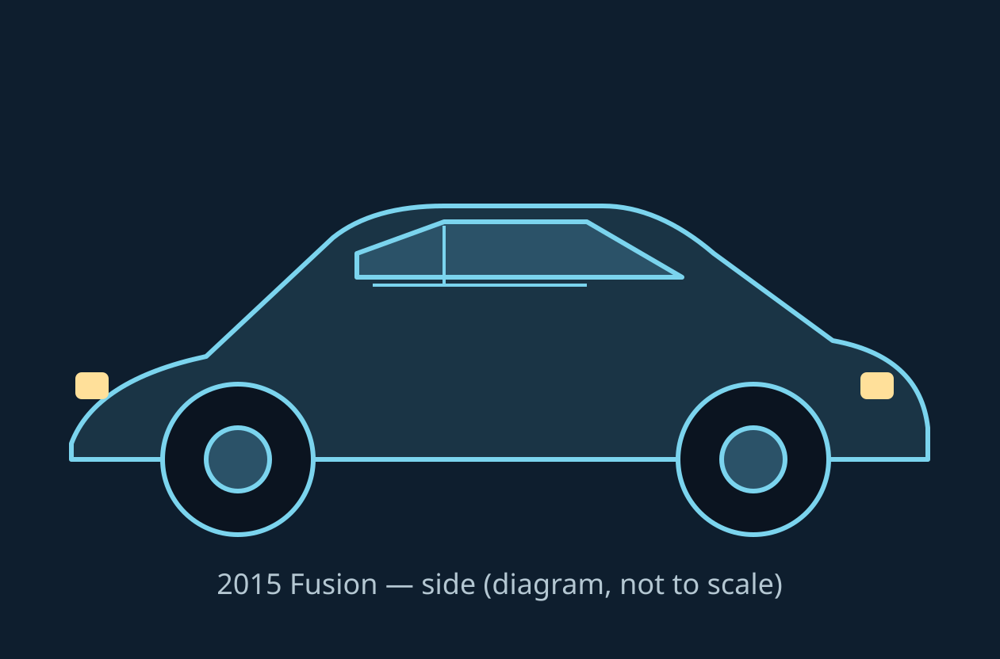

Source-linked reference
Find the part. Check the source.
Explore a vehicle zone or search the guide. Each entry points back to the 2015 owner's manual. Page numbers are the printed manual pages; in the 488-page gasoline PDF they are 3 pages higher.
Vehicle map
Explore the Fusion
Choose a view, then select a zone. The zone list provides the same controls without the image. Diagrams are simple sedan outlines made for this guide, not Ford artwork.

Vehicle zones
Specifications and procedures
Maintenance entries
Accessible reading view
Owner checks, scheduled maintenance, and relevant specification tables, written as concise HTML entries. Open the cited printed page for the full table or procedure.
Original source
2015 U.S. owner's manual
Scheduled maintenance starts at printed page 458 in the gasoline manual. No owner's manual PDF is bundled in this repo, so the viewer below only activates if you add one (see README). Use the official and online-viewer links for the full manual.
Online viewer
488-page gasoline manual, by printed page
Printed page + 3 = PDF page in that edition (for example, printed p. 463 is PDF p. 466). The Hybrid/Energi manual is a separate 498-page edition with its own pagination.
Open the PDF viewer to load a locally supplied manual, if one is present.